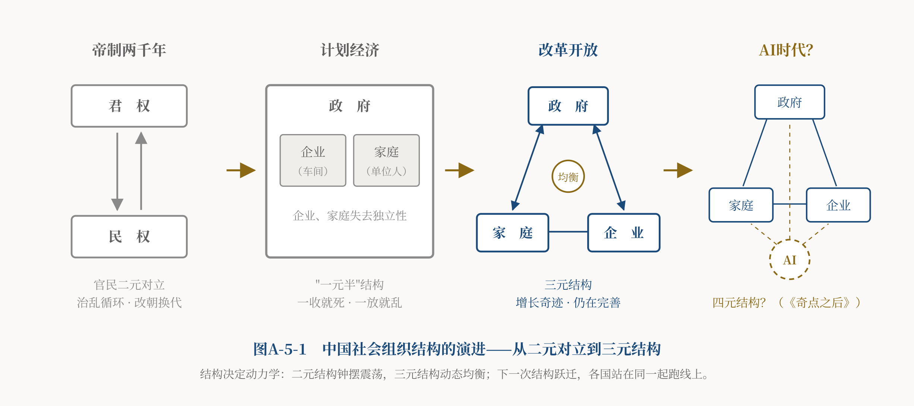

导言：一个尚未解开的谜
中国经济四十多年的高速增长，是二十世纪后期以来影响人类历史进程的最重大事件——它改变了世界范围内权利与权力的配置格局，引发了全球地缘政治的重新洗牌。是什么原因导致了中国崛起？经济学家、政治学家、历史学家、社会学家纷纷给出解读，却似乎总隔着一层。"要素禀赋说"归因于人口红利和高储蓄率，"后发优势说"强调技术引进和学习曲线，也有学者从地方政府的县域竞争中寻找答案；诺贝尔经济学奖得主阿西莫格鲁和罗宾逊则用"包容性制度"与"攫取性制度"的两分法解释国家兴衰，却在中国经验面前遭遇了尴尬——按他们的标签，中国的增长本不该持续这么久。[1]
这些解释各有洞见，本文并不否定它们。要素禀赋、后发优势、对外开放、地方竞争，都是中国增长的真实动力。但本文想追问一个更底层的问题：这些因素为什么恰恰在改革之后才被激活？人口红利为什么1980年代之后才释放？技术为什么此前引不进、学不会？地方政府为什么从"管制的手"变成了"竞争的手"？对外开放的机会并非改革后才出现，为什么此前不开放？
本文提出一个结构性的解释：这些因素之所以能在改革后发挥作用，前提是家庭、企业与政府三者的主体关系发生了重构。这个解释不与其他解释争地盘，而是试图说明其他解释为何在改革后才生效——它提供的是一个更底层的制度条件。
本文的核心命题是：中国崛起的深层变化，不只是从计划转向市场，而是家庭和企业重新成为相对独立的行为主体，使中国从政府主导的"一元半"结构，转向家庭、企业、政府三元结构。其分寸在于：中国已经完成了从主体缺位到三元主体形成的历史转变，但尚未完成从三元并存到有效制衡的制度建设——三元主体已经出现、三元关系已经形成，而三元制衡尚未成熟。与这一主体重构相伴的，是意识形态从强调阶级斗争的旧唯物史观二元对立思维，向事实上的和合主义哲学的演进。把镜头拉远到以百年为单位的长周期看，中国的崛起，是中华文明在制度与文化层面对二元对立结构进行"破"、对三元制衡结构进行"立"的重构与复兴过程——这场重构至今仍在进行之中。
本文分四步：先看传统帝制的官民二元结构及其历史后果；再看计划经济为何是二元结构的现代变体，及其留下的双重遗产；然后分析改革开放如何重新生成了家庭与企业两个相对独立的主体——这是本文结构解释的核心；最后诚实地面对未竟之路：今日中国经济的结构性分化，正说明三元制衡尚不成熟、"大三权"仍待再平衡。
一、千年之锁：官民二元对立与治乱循环
黑格尔在《历史哲学》中认为，中国很早便形成了此后长期反复出现的固定结构；在他的历史哲学框架里，这种“反复的固定性”取代了他所谓真正的历史发展。[2]这句苛评未必公允——中华文明的技术、艺术、思想何尝停止过演进——但它确实点中了一个结构性特征：自秦以降两千余年，中国社会的政治组织结构高度稳定，几乎没有根本变化。
这个结构在周秦之变中定型。秦废封建、行郡县，把西周以来层层分封的贵族制一举扫平，建立起皇帝经由官僚系统直达编户齐民的中央集权体制。"普天之下，莫非王土；率土之滨，莫非王臣"——中央权力自上而下直达亿万小农家庭。
所谓官民二元结构，并不是说传统社会只存在两个社会群体。宗族、士绅、寺院、行会、会馆、商帮以及地方自治惯例广泛存在，在基层秩序中发挥着实际作用。关键差别在于，与欧洲分散的封建权力结构相比，传统中国缺少能够以稳定的法律身份、与中央权力长期抗衡的自治政治主体。宗族、士绅、行会、商帮等中间力量虽然广泛存在，其权利边界却缺乏独立、普遍而稳定的制度保障——它们依附于皇权而非制衡皇权，可以被恩准，也可以被收回。正是在这个意义上，本文称之为官民二元对立结构：不是说社会只有两个群体，而是说在制度层面，缺少一个拥有对等权利、能与国家权力持续博弈的中间主体。
对照同时期的西欧，可以看出权力结构的差异。欧洲的封建制包含着权力的分割：国王与领主相互立约，教会与王权彼此牵制，自治城市在夹缝中生长。1215年的《大宪章》和布拉克顿"国王在上帝和法律之下"的名言，[3]体现了多元力量彼此制衡的一面。
这里比较的，是两种权力结构所提供的制度演化可能性，不是对中西文明作道德优劣判断，也不意味着欧洲封建制必然通向现代法治。欧洲封建社会同样有农奴制、连绵战争、宗教迫害与后来的绝对主义王权；《大宪章》最初主要是王权与贵族之间的政治契约，并非现代公民权利宣言；欧洲的现代制度也不是封建分权自然长成的，而是经历了漫长而血腥的冲突才逐步形成。因此这里说的只是：分散的封建权力结构，为后来的多元制衡保留了较多的制度接口；而中国自秦以后高度集权的结构，皇权缺少对等的制度化约束，能约束它的主要是天命观念与纲常伦理这两样软性力量。
于是出现了中国政治文化最耐人寻味的景观：思想极高明，制度无着落。孟子讲"民为贵，社稷次之，君为轻"[4]，荀子讲"君者，舟也；庶人者，水也；水则载舟，水则覆舟"[5]——民本思想不可谓不深刻。但请注意水舟之喻的结构含义：水与舟，仍然是两极；水平日托着舟，忍无可忍时掀翻舟——民权对君权的"制衡"，不是制度化的日常谈判，而是以起义为形式的总清算。三纲五常则是从另一个方向做的软性调节：用伦理责任约束在上者，用名分秩序安顿在下者。这是一种理想化的官民关系设计，它能缓和二元对立，却改变不了二元结构本身。如果把长城视为一种文化隐喻，它也呼应着这种结构气质——面向内部求稳定、面向外部求安全的内敛取向。（这是联想式的类比，而非从边防工程直接推导政治文化。）
这个结构还有一个后果，对理解本文主题至关重要：它没有给独立的企业及企业家一极留下生长的位置。科举制度把民间最优秀的头脑源源不断地吸入官僚体系——看似打通了官民两极，实则强化了二元结构：精英的出路是入仕做官，而不是留在民间壮大社会。重农抑商的国策之下，商人纵然致富，最安全的归宿也是买地、捐官、攀附权力，资本流向土地和官府，而不是流向产业积累。更要命的是产权缺乏稳定保障：围绕明初巨富沈万三的历史记载与后世传说，以及晚清红顶商人胡雪岩盛极而骤败的经历，都反映出传统商业财富对政治权力的高度依附——在缺乏制度化产权保障的环境里，再大的商业财富也可能随权力的向背而聚散。明清江南的工商业曾繁荣到让后世史家争论"资本主义萌芽"，但萌芽长期难以长成大树，重要原因之一在于结构：缺乏稳定制度保障的产权环境里，难以稳定地生长出一个拥有独立产权、能与权力持续博弈的企业家阶层。西欧的商人阶级在封建裂缝中逐步长成市民社会、进而成为现代经济的一极；相比之下，传统中国的商人阶层始终缺乏与权力对等的制度化地位——纵有巨富，其财产权终究依附于权力的容许，而非独立于权力的保障。
二元结构的动力学后果，本站《和合主义》一文已从哲学上论证过：两极直接相对、没有中间支点的结构，只能在两极之间做无阻尼的钟摆震荡。中国历史给这个命题提供了最长时段的经验证明——治乱循环。王朝初年轻徭薄赋，官民相安；承平日久，权力失去约束、兼并失去控制，民不堪命；最后农民起义总清算，改朝换代，一切重来。"分久必合，合久必分"，两千年间循环往复。金观涛、刘青峰将其概括为"超稳定结构"：组织结构超常稳定，而社会运行剧烈震荡，每次大动乱毁灭性极强，重建后的结构却与之前几乎相同。[6]1945年，黄炎培在延安窑洞里向毛泽东提出的那个著名问题——"其兴也勃焉，其亡也忽焉"，如何跳出历史周期率——问的正是这个结构之锁。[7]
把第一部分的结论收拢成一句话：两千年"结构稳定而社会不稳定"之谜，就是二元对立结构之谜。结构里没有第三方，矛盾就没有缓冲；矛盾没有日常的和合调节，就只能积累到危机爆发时总清算。要跳出治乱循环的历史周期率，靠改朝换代没有用，靠"好皇帝"也没有用——必须换结构。
二、计划经济：二元对立的现代变体
1949年之后建立的计划经济体制，主观意图正是要跳出治乱循环：用统一计划取代市场的盲目性，用公有制铲除兼并与剥削的土壤，一劳永逸地实现秩序与公平。然而，用结构的眼光审视，会发现一个深刻的历史吊诡：计划经济没有走出二元结构，只是给了它一个现代的形态。
先看结构。计划体制下，政府一极空前强大：不仅垄断权力，而且直接组织全部生产——"政府办企业"，企业没有独立的利益、产权和决策权，本质上是行政体系的车间，厂长对上级部门负责，而不对市场负责。家庭一极则被组织化地吸收：城市里"企业办社会"，每个人的住房、医疗、子女入学乃至婚丧嫁娶，都由单位包揽，档案在单位、户口在单位，离开单位寸步难行——个人隶属于单位，形成一种"以单位为基础的人力资本依附制度"；农村政社合一，生产队统一出工、统一分配，家庭经济湮没在公社的大锅里。与之配套的是无所不在的票证：粮票、布票、油票、肉票——消费不由家庭的钱包决定，而由国家的计划决定。家庭失去的不只是财产，而是作为独立经济主体的资格。数一数行为主体：企业丧失了独立性（并入行政体系），家庭在很大程度上失去了独立经济主体的资格（并入单位与公社）——三元被压缩成了"一元半"：一个无所不包的政府，加上半个失去独立性的社会。官民二元对立的古老结构，以"国家—单位人"的新形式延续了下来。
结构相同，病理就相同。第一个病理，是本站《曼昆〈经济学原理〉的三大缺陷·上篇》（以下简称《曼昆批判》）和《和合主义》都论证过的那对根本矛盾：生产资料公有制与劳动力天然私有制的矛盾。劳动力人力资本存在于每个人的生命里，天然属于个人；每个人的禀赋、努力天然不同。而平均主义分配抹平了这种差异：干和不干一个样，干多干少一个样——从成本收益比看，在收益不变的前提下，付出越少就等于赚得越多。于是理性的个人普遍选择"磨洋工"，个人的理性汇成集体的非理性，结果是激励瓦解、效率坍塌。用《和合主义》的语言说，这是"以同裨同，尽乃弃矣"：企图用强制同一来处理差异，收获的只能是普遍的短缺。匈牙利经济学家科尔奈对社会主义经济的经典诊断——短缺是这类体制的常态而非偶然[8]——中国在票证年代有切肤的体会。
第二个病理，是治乱循环的体制内翻版："一收就死、一放就乱"的小循环。中央权力收紧，统得过死，经济窒息；于是向地方和企业放权，放开一点，活力冒头，秩序也开始松动；一乱，再收；一收，再死。集权与放权的钟摆，在计划经济三十年间摆动了数轮——1950年代末向地方大幅放权，1960年代初重新集中，1970年代再放再收——这正是二元结构无阻尼震荡的老逻辑，只是震荡周期从王朝更迭的二三百年，缩短为体制内的十年八年。结构里依然没有第三方：没有独立的企业用价格信号说话，没有独立的家庭用消费选择投票，调节全靠上面对权利和权力的收与放，而收放本身就是震荡之源。
意识形态与制度结构同构。支撑计划体制的哲学，是把阶级斗争绝对化的旧唯物史观二元对立思维——社会被劈成"资"与"无"两大阶级，世界被划成你死我活的两个阵营，斗争是历史前进的唯一引擎，"以阶级斗争为纲"是这种哲学在政治上的顶点。更有甚者，旧唯物史观把物质生产方式奉为社会发展的唯一动力：只见生产，不见生活；只讲生产力，不讲生命力；家庭的人口再生产、消费与养育，被贬为生产的附属品。《和合主义》对斗争哲学的批评、《曼昆〈经济学原理〉的三大缺陷·中篇》对"重生产、轻生活"的批评，病根都在这里。
但是，用结构的眼光批评计划经济的主体缺陷，不等于说前三十年一无所获。否则就无法解释：如果前三十年只有失败，改革后的工业化能力又从何而来？
计划经济在主体结构和微观激励上存在严重缺陷，但它也完成了若干前工业化国家难以迅速完成的基础积累。在这一时期，中国建立起了较为完整的工业体系与国防工业，铺设了基础设施的骨架，大幅提升了基础教育与公共卫生水平（识字率、预期寿命的改善尤为显著），并锻造出一套强有力的国家组织与动员能力。这些积累构成了后来增长的物质与人力基础。因此，改革开放的成就不是从真空中产生的：它通过新的三元主体结构，重新激活并大幅提高了既有积累的配置效率。换言之，前三十年积累了"存量"，却困于低效的配置结构；改革则通过重构主体关系，让这些存量第一次获得了高效运转的制度条件。这也正符合和合主义反对非此即彼的原则——历史很少是纯粹的失败或纯粹的成功。
于是，第二部分可以收拢为一个判断：计划经济的困境，主要是结构的困境——它以现代的名义重建了官民二元对立，也就继承了二元结构的诸多病理；但它同时留下了可被重新激活的基础积累。真正的出路，是改变主体结构。而这一次，中国真的改变了。
三、改革开放：三元主体结构的形成
对改革开放最流行的概括，是"从计划到市场"。这个概括不错，但停在了现象层。市场不是从天上掉下来的机制，它需要行为主体——需要有独立利益、独立产权、能自主决策的买家和卖家。改革最深层次的突破，是重新生成了两个相对独立的行为主体，把计划经济的"一元半"结构，转变为家庭、企业、政府三元结构：家庭一极的复位，企业一极的诞生，加上政府一极的职能转身。本文的结构解释，就落在这三步之上。
第一步棋：家庭一极的诞生——劳动力成为商品，家庭成为投身市场竞争、追求基于劳动收入的幸福最大化的行为主体。从此，每个家庭都变成一台微型发动机，为中国经济的腾飞注入了最原生的初始动力。
起点在农村。1978年冬，安徽小岗村十八户农民按下手印，包产到户；随后家庭联产承包责任制在几年内席卷全国，"交够国家的，留够集体的，剩下都是自己的"。[9]这句农民语言里藏着一场产权革命：土地所有权与使用权分离，家庭重新成为独立核算、自负盈亏的经济单元——被公社吸收了二十多年的家庭一极，复活了。
城市的对应改革是劳动就业制度：打破"铁饭碗、大锅饭"，废除统包统配，推行劳动合同制——劳动力从"单位所有"回归个人所有，劳动力人力资本的天然私有权第一次得到制度性承认。这一承认的历史能量难以估量：数以亿计的农村剩余劳动力涌向城市和沿海，农民工总量2024年达2.9973亿人[10]——形成了人类历史上规模极为罕见的和平时期劳动力流动。劳动力成为商品、在就业市场上有了价格，家庭从此成为依靠工资收入，自主决策消费与养育、教育、繁衍的独立市场主体。用本站的理论说：两种生产中基于生活消费的那一种——人口繁衍与劳动力人力资本的再生产——重新接入了市场经济的底层循环，而这正是循环中不可或缺、也最重要的一环。
第二步棋：企业一极的诞生——资本有了独立的产权边界，企业成为具有独立利益、通过市场竞争追求利润最大化的行为主体。于是，企业集群与企业家阶层崛起，成为引领中国经济腾飞、创新、发展的千千万万个领头羊。
从放权让利、利改税、承包制，到1990年代的股份制改造和现代企业制度，再到抓大放小、混合所有制与资本社会化，国有企业一步步获得了独立于行政体系的法人产权和利益边界——厂长开始对市场负责。与此同时，一个全新的物种从无到有：个体户、乡镇企业、民营企业。2018年，官方曾以"五六七八九"概括民营经济的贡献——贡献了50%以上的税收、60%以上的GDP、70%以上的技术创新成果、80%以上的城镇就业和90%以上的企业数量。[11]这一概括虽为数年前的表述，但民营经济已成为国民经济重要组成部分这一基本格局是稳定的。追求利润最大化的企业一极，站起来了。
第三步棋：政府一极的转身——从直接指挥到间接调控。
价格改革是枢纽。经过1980年代双轨制的过渡与阵痛，到1990年代中期，绝大多数商品和服务的价格已由市场形成，价格信号取代行政指令，成为资源配置的指挥棒。与之配套的是政府自身的换骨：1994年分税制改革重建了政府的财政基础；1998年国务院机构改革撤销了机械工业部、电力工业部等一批专业经济部门[12]——这些曾经直接指挥生产的机构的消失，标志着政府经济管理方式的重大转变：政府的主要角色，由全面直接指挥生产，逐步转向宏观调控、市场监管与公共服务；但它并未简单"退出微观"，而是同时通过国有企业、产业政策、政府投资、土地财政等方式，继续深度参与经济运行。正是这种"既转身、又在场"的双重性，使中国模式既不同于传统计划经济，也不同于自由放任型市场经济——政府更像一个深度参与市场、同时又须受制衡的能动的中间支点（《曼昆〈经济学原理〉的三大缺陷·中篇》）。
三步棋落定，一个新的主体结构在中国大地上成形了：家庭以生活、养育和幸福为主要目标，企业以利润与持续经营为主要目标，政府以公共秩序、公共产品供给及组织能力为主要职能——三个性质不同、目标不同的主体，共同参与市场，相互依存又相互制约。（三者的目标都可能异化——家庭短视、企业损人利己、政府扩张自利，正因如此才需要相互制约。此处以"权力最大化"刻画政府，是行为假设而非道德定性，它与政府的公共产品职责张力共生，详见《曼昆〈经济学原理〉的三大缺陷·中篇》。）这就是三元结构的雏形。中国近代以来第一次，在全国性制度层面形成了相对独立的家庭、企业、政府三类经济主体，为兼顾各方诉求、化解矛盾冲突，提供了一个全新的、有待成熟的缓冲与调节基座。
这里还必须专门说一说改革的方法——因为方法本身，就是和合主义哲学的展演。中国改革没有采取推倒重来的休克疗法，而是走了一条双轨并行、增量先行、试点推广的渐进之路：价格双轨制让计划轨与市场轨并存过渡，新旧体制"以他平他"而非你死我活；改革先在深圳等特区试验，成了再推广，错了可收回；农村先行、城市跟进，增量先活、存量后改——"摸着石头过河"这句朴素的话，骨子里是拒绝二元对立式的一步到位，承认转型是一个需要持续把握"度"的动态过程，这正是《和合主义》所说"致中和"的治理技艺。对照组是现成的：俄罗斯1990年代的休克疗法试图一夜之间从一个极端跳到另一个极端，结果是转型初期经济大幅收缩、社会剧烈震荡——按不变价计，俄罗斯实际GDP在1992—1998年的转型衰退期间累计下降近四成。[13]同样是告别计划经济，二元式的休克与和合式的渐进，结局判然有别——方法论的差异，归根到底是哲学的差异。对外开放同样是渐进的和合：从特区窗口到沿海开放，再到2001年加入世贸组织，中国把新生的三元结构一步步接入全球分工体系，让开放倒逼改革，让外部竞争锤炼内部主体。
增长奇迹随之而来，数据无需渲染：世界银行概括，1978年至今中国GDP年均增长超过9%，近8亿人摆脱极端贫困，约占同期全球减贫人口的四分之三[14]；按现价美元计，人均GDP从1978年的约156美元增至2024年的约1.34万美元；2024年末常住人口城镇化率为67.00%。[15]
为什么三元结构有如此魔力？用《和合主义》的三个命题看，答案层次分明。其一，承认差异——承认人人有私心、承认劳动力私有、承认企业逐利，正是"和实生物"的制度化：差异被承认，激励就被点燃。其二，双向解放——人力资本从单位和公社中解放出来，产业资本从行政隶属中解放出来，两种异质要素在市场中自由组合，"以他平他"，生成了此前三十年不可想象的财富。其三，三元制衡——政府不再包揽和直接指挥全部生产，而是更多承担宏观调控、市场监管与公共产品供给，同时仍以多种方式参与经济运行；在此过程中维护秩序、提供公共产品，社会数十年总体稳定，为两种生产的循环提供了不可或缺的生态。这三条，构成了中国增长的制度基座。
这一解释必须接受反例检验。家庭、企业、政府三类主体，几乎存在于所有现代国家；既然都有三元主体，为什么各国经济绩效如此悬殊？为什么印度、拉美国家、转型后的俄罗斯，都有家庭、企业、政府，却没有复制中国的增长速度？为什么中国三元结构形成之后，内部省份之间仍有巨大差异？
这些反问指向一个必须承认的限定：三元结构本身不是成功的充分条件。仅仅"存在三个主体"什么也保证不了。真正发挥作用的，是三元主体的独立性程度、开放度、相互依赖与制衡的方式，以及它们与全球市场结合的具体结构——是这些变量的特定组合，而非三元结构的简单存在，决定了增长能否发生。三元结构提供的是增长得以发生的制度基座，但不自动保证增长；正如地基不自动等于大楼，只是大楼得以矗立的前提。
本文的命题因此是可反驳的：它主张的不是"凡成功皆因三元、凡失败皆因三元不完善"这种正反都能自圆其说的循环论证——如果能找到"三元主体独立、开放、相互制衡俱备，却长期无法增长"的确切反例，这个假说就需要修正。中国的经验为它提供了一个有力的正面案例，但案例不等于普遍规律的证明。这里也要坦承一个理论上的尾巴：如果把"独立性、开放度、相互依赖、制衡方式"等变量不断罗列，理论就有滑向"成功国家总能找到正确组合"的事后归因的危险。因此，这一结构假说的下一步任务，是把主体的独立性、制衡程度及其作用机制，转化为可观察、可比较的指标——例如家庭主体性如何通过劳动供给、消费与人力资本投资影响增长，企业主体性如何通过剩余索取权、进入退出与创新激励影响增长，政府能力如何通过公共产品、宏观稳定与产权预期影响增长。本文不展开建模，但把这条通向可检验研究的入口标记在此。
意识形态的演进与结构变革互为表里。"以阶级斗争为纲"让位于"以经济建设为中心"；斗争哲学逐步让位于务实的调和逻辑——不是说阶级分析从此彻底消失，而是它不再是主导性的思维框架，渐进、调和、合作的改革逻辑上升为主流：劳资关系不再被主要定义为你死我活的阶级斗争，而更多被理解为相互依存的合作关系；公有制与私有制不再水火不容，而是"两个毫不动摇"之下的并存共生。中国道路是什么？中国特色是什么？文字和名义上的表述几经调整，实际的运行逻辑却日益清晰——用《和合主义》的分析性判断来说：中国的政经体制，名义上是社会主义，实际上正在探索的是一条和合主义道路。"中国和合主义道路"这个命题，也正好回应了阿西莫格鲁式的困惑：用"包容/攫取"的二分标签衡量中国，处处格格不入；换一把尺子——用家庭权利、企业权利、政府权力"大三权"配置结构的视角重新审视——中国四十多年发展的风雷激荡，处处对得上。重要的从来不是制度的名称，而是结构的实际形态。
四、未竟之路：K形分化与"大三权"再平衡
如果文章写到上一节结束，它就成了一曲颂歌。但本站的立场是"没有现成答案，只有认真的追问"——追问必须继续：三元结构建成了吗？
远未完全成熟。今日中国经济的种种困难，正说明三元制衡尚不成熟。最直观的表现，是近年来广受讨论的结构性分化（常被形象地称为"K形分化"）：同一个经济体内部，不同群体与部门的走势明显分叉——资产持有者与工薪家庭的财富变动分化，头部企业与中小企业的经营状况分化，出口高技术部门与内需民生部门的景气分化。"K形"是一个便于把握的修辞意象，其严格的经验刻画（哪两条曲线、以何指标、分化到何程度）仍有待更系统的数据展示；本文用它指称一种可观察的结构性分化倾向，而非已被完整证明的数据结论。宏观上的对应物，就是《曼昆〈经济学原理〉的三大缺陷·中篇》诊断过的两大症结：有效需求不足、消费疲软，家庭及为家庭服务的非营利机构最终消费支出占GDP比重长期偏低（按世界银行NE.CON.PRVT.ZS指标，2022年约为38%）；增长长期过度依赖投资与出口，产能过剩挥之不去。[16]K形的下行一笔，落在具体的人身上：相当一部分灵活就业人员的社会保障仍不充分，收入不稳、保障不全；青年就业压力成为结构性问题；许多家庭背负房贷、压缩消费——《曼昆〈经济学原理〉的三大缺陷·中篇》分析过的房地产泡沫与家庭负债，正是压在家庭一极上最重的一块石头；人口趋势的逆转，则是家庭系统发出的最深沉的警报——2024年全国出生人口954万，人口自然增长率为−0.99‰，总人口连续负增长。[17]高速增长期，投资与出口是主要拉动力量，消费占比反而长期下降，结构失衡被高速度所掩盖；近年全球需求波动、地缘政治风险与贸易壁垒上升，外部市场的不确定性明显增加——即使出口仍保持较强韧性（2023年人民币计价货物出口增长0.6%，2024年增长7.1%、进出口规模创历史新高[18]），消费不足这一内部结构短板，也不能继续由外需和投资扩张长期遮蔽。
病根在哪里？不是市场化过了头，而是"大三权"配置仍然失衡——家庭一极依然最弱。收入分配中劳动报酬占比长期偏低，教育、医疗、养老的保障网存在短板，迫使家庭高储蓄、压消费；数据权利、集体谈判等新型权利更未建立。而失衡的观念根源，正是旧唯物史观的惯性残留——"重生产、轻生活"，把生产力当作社会进步的唯一尺度，把消费当作可以牺牲的余数。必须再说一遍本站反复申明的判断：消费不是浪费。生活消费的水平，直接决定人口的质量——教育、医疗、文化、体育的消费，就是人力资本的生产投入。生命力高于生产力，这在今天的中国不是抽象哲理，而是最具针对性的政策方向。
因此，继续深化改革的方向不是别的，而是与时俱进地再配置"大三权"：一手提高家庭权利的权重，一手保护企业活力、稳定民营经济的产权预期（具体路径，《曼昆〈经济学原理〉的三大缺陷·中篇》的六大举措已有系统论述）。给家庭赋权，内容是具体的：初次分配上，提高劳动报酬占比，增强劳动者集体议价能力；二次分配上，推进社保全国统筹与全民覆盖，补齐教育、医疗、养老、托育的公共服务短板，让家庭敢于消费、敢于生育；财产权利上，稳定居民财产性收入的制度预期；新型权利上，把数据权利、面对算法的谈判权纳入议程（本站《AI革命前景：从和合主义哲学看技术进步与制度创新》已有论述）。一句话：把当年给企业放权的魄力，用到给家庭赋权上来。
然而，AI时代给这个方向出了一道新难题。一方面，激活内需要求继续放权——把资源和权利向家庭、企业倾斜；另一方面，本站《按需分配》和《AI革命前景：从和合主义哲学看技术进步与制度创新》论证过，AI冲击就业与税基，客观上要求加大政府二次分配的权重——算力税、主权财富基金、全民持股，件件都要政府的手更有力。放权与集中，看似南辕北辙，这是深化改革必须直面的矛盾与挑战。和合主义的解法依然是结构性的：政府的分配权重可以加大，但必须在三元制衡结构之内加大——政府之手伸长的每一寸，都要有家庭权利的实质增进和企业制衡的同步跟上；脱离制衡的集中，无论初衷多好，都是向"一元半"老结构的倒退。这正是三元结构与二元结构的分水岭：前者问的是"权利和权力受不受制衡"，后者只问"权力在谁手里"。
把镜头拉远收束。若以粗略的长时段眼光看，不同社会的组织结构呈现出不同的复杂化路径：农业社会大体是政府与家庭为主的结构，西欧以封建分权的形态呈现、中国以中央集权郡县制的形态呈现；进入现代，随着市场经济与工业化的展开，家庭、企业、政府相对独立的三元结构在一些社会中逐步生长。中国则用四十多年的改革，以压缩的方式完成了家庭与企业两个主体的重新生成。（须提醒：这只是一个高度简化的结构示意，不是严格的历史分期，也不意味着各文明必然沿同一条路径演进。）下一步，本站《奇点之后》已经预告：AI可能作为一种新的力量深度介入人类生活，组织结构或将面临新的演变——在那个新起点上，先行者与后来者，某种意义上又站到了相近的起跑线上。

结语
中国崛起的制度与文化之谜，谜底可以用一句话交出：不是找到了某种被标签化的、"更好的"资本主义制度或社会主义制度，也不只是引进了市场，而是换掉了延续两千年的结构——官民二元对立逐步让位于家庭、企业、政府三元主体并存的结构，并开始向三元制衡演进；斗争哲学的主导地位，逐步让位于更具调和与务实色彩的和合逻辑。
这场结构变革远未完成。K形分化提醒我们，家庭一极仍然虚弱；AI革命预示着，结构还将迎来更大的考验。中国崛起不是一个已经完成的故事，而是一场仍在进行中的重构——它已经走过的路，为"三元结构"这一假说提供了重要的经验支持；它尚未走完的路，标出了继续改革的方向。
面对世界，中国经验的意义或许在于：可持续发展的钥匙，不在于选对某种"主义"的标签，而在于建成差异共生、三足鼎立的结构。这正是和合主义哲学与和合主义道路能够作为公共产品，贡献给多极化世界的一份礼物。[19]
注释
- 阿西莫格鲁与罗宾逊的"包容性/攫取性制度"框架，见 Daron Acemoglu & James A. Robinson, Why Nations Fail（2012）。
- 黑格尔：《历史哲学》，王造时译，上海书店出版社，1999年。相关论断的解读学界尚有争议，本文取其"结构稳定"一面。
- 布拉克顿（Henry de Bracton）"国王在上帝和法律之下"之语；《大宪章》（Magna Carta, 1215）。须注意《大宪章》最初主要是王权与贵族之间的政治契约。
- 《孟子·尽心下》。
- 《荀子·王制》。
- 金观涛、刘青峰：《兴盛与危机——论中国社会超稳定结构》，法律出版社，2011年（原著1980年代）。"超稳定结构""治乱循环"为其核心概念。
- 黄炎培1945年访问延安与毛泽东关于"历史周期率"的对话，见黄炎培《延安归来》。
- 亚诺什·科尔奈（János Kornai）关于短缺经济的经典诊断，见 Economics of Shortage（1980）。
- 家庭联产承包责任制的相关表述，见中央历年农村改革文件与相关史料。
- 国家统计局：《2024年农民工监测调查报告》，2024年全国农民工总量2.9973亿人（stats.gov.cn，2025年4月发布）。
- "五六七八九"为2018年11月民营企业座谈会上的官方概括（贡献50%以上税收、60%以上GDP、70%以上技术创新、80%以上城镇就业、90%以上企业数量）。本文按其原始年份引用，不作为2024/2025年的即时统计。
- 1998年3月，第九届全国人大一次会议批准国务院机构改革方案，机械工业部、电力工业部、煤炭工业部等专业经济部门被撤销。
- 俄罗斯转型期GDP收缩：世界银行世界发展指标（WDI），按不变价计，俄罗斯实际GDP在1992—1998年的转型衰退期间累计下降近四成（具体数值随基年与数据库版本略有差异）。
- GDP年均增速与减贫：世界银行中国国别数据（worldbank.org），1978年以来GDP年均增长超过9%、近8亿人摆脱极端贫困、约占同期全球减贫的四分之三。减贫另见世界银行与国务院新闻办公室《人类减贫的中国实践》。
- 人均GDP（现价美元）：世界银行WDI，1978年约156美元、2024年约1.34万美元。常住人口城镇化率67.00%（2024年末）：国家统计局《2024年国民经济和社会发展统计公报》。
- 家庭及为家庭服务的非营利机构最终消费支出占GDP比重：世界银行 NE.CON.PRVT.ZS 指标，2022年约为38%（databank.worldbank.org）。该指标不含政府消费，与包括政府消费的"最终消费率"不同。两大症结的详细分析见本站《曼昆〈经济学原理〉的三大缺陷》中篇。
- 2024年出生人口954万、人口自然增长率−0.99‰、总人口连续负增长：国家统计局《2024年国民经济和社会发展统计公报》（stats.gov.cn，2025年2月发布）。
- 货物进出口数据：国家统计局《2023年国民经济和社会发展统计公报》（2023年人民币计价货物出口增长0.6%）、《2024年国民经济和社会发展统计公报》（2024年出口增长7.1%，进出口规模创历史新高）。
- 本文所引本站文章：《和合主义：合三为一政治经济学的哲学基础》、《曼昆〈经济学原理〉的三大缺陷·上篇》、中篇；《奇点之后，人类的位置在哪里？》《按需分配：AI时代财富分配机制重构》《AI革命前景：从和合主义哲学看技术进步与制度创新》。